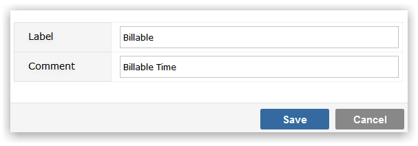

Time Type codes are optional codes that you can use to describe time log entries, for example 'Billable' and 'Non-billable'.
Make sure that you have selected the Project Template that you wish to maintain Time Type values for from the drop-down list.
To Add a new Time Type value, click on the Add button. You will be prompted to provide:

Click Save to create the Time Type value.
To maintain the Label or Comment values, click in the appropriate field and use Inline editing to easily and instantly change the field value.
To delete a Time Type click on the delete icon to the right of the screen. You will be required to specify an alternative value that any items in the deleted Time Type will be recoded to. This is to ensure that there are no orphaned records in your data, with Time Type codes that do not exist in the Template.